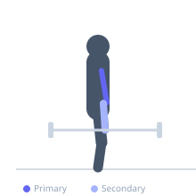

Exercise guide / Barbell 21s
Barbell 21s
A barbell curl protocol using 21 total repetitions split into three segments: 7 reps from the bottom to the midpoint, 7 reps from the midpoint to the top, and 7 full-range reps. Each segment targets a different portion of the strength curve and produces significant metabolic stress in the biceps.
Primary muscles
biceps brachii long head
biceps brachii short head
Secondary muscles
brachialis
brachioradialis
Stabilizers
flexor carpi radialis
Equipment
Standard Barbell
Optional
EZ-Curl Bar
Dumbbell (Fixed)


Starting position
- Stand holding a barbell with an underhand grip, arms fully extended.
Setup
- Select a weight approximately 60-70% of your normal curl working weight. Stand tall with the bar hanging in front.
Steps
- Step 1 (reps 1-7): Curl from full extension to the midpoint only (forearms parallel to floor). Lower back down and repeat 7 times.
- Step 2 (reps 8-14): Start from the midpoint and curl to full contraction at the top. Lower back to midpoint and repeat 7 times.
- Step 3 (reps 15-21): Perform 7 full-range curls from full extension to full contraction.
Coaching cues
- No rest between segments
- Feel the pump build through each set
Breathing
- Breathe rhythmically throughout each segment. Exhale on the curl, inhale on the lower.
Range of motion
- Partial ranges in segments 1 and 2, full range in segment 3.
Tempo
- 2-0-2-0 for each rep
Common mistakes
- Using too heavy a weight — the third segment of full reps becomes impossible
- Resting between segments
Safety
- All 21 reps are performed without putting the bar down
Training
- hypertrophy: 8–15 reps
- hypertrophy: 3–4 sets
- Rest: {'hypertrophy': 90}